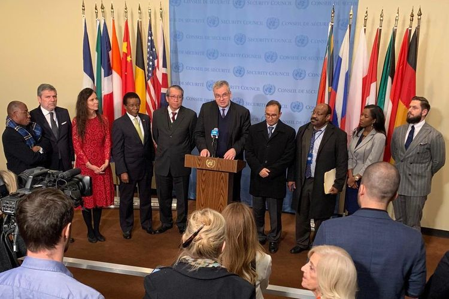
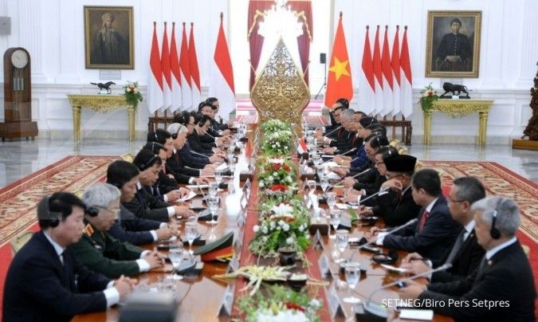
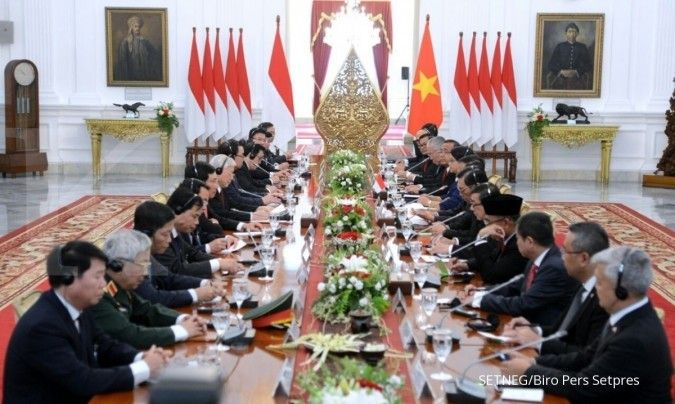

 

Hubungan Kerjasama Multilateral adalah Kerja sama antara banyak negara dalam skala global atau regional yang melibatkan lebih dari dua negara. Biasanya kerjasama seperti ini melibatkan organisasi internasional agar dapat menyelesaikan masalah global secara efektif. Seperti organisasi PBB (Perserikatan Bangsa-Bangsa), WTO (World Trade Organisation), ASEAN, G20, WHO (World Health Organisation).
1) Menyelesaikan masalah global secara bersamaan
2) Perdamaian Global
3) Meningkatkan Ketahanan terhadap Krisis
4) Meningkatkan Kesejahteraan Ekonomi
5) Memperkuat Hubungan dan Solidaritas antar Bangsa
United Nations Educational, Scientific and Cultural Organization (UNESCO)
UNESCO adalah lembaga yang dibawah naungan Perserikatan Bangsa-Bangsa (PBB) yang didirikan pada 16 November 1945. Tujuan utama UNESCo adalah untuk mempromosikan perdamaian dunia melalui pendidikan, sains, dan kebudayaan global untuk pembangunan berkelanjutan dan pelestarian warisan budaya dunia. Serta mendukung kerjasama internasional di bidang ilmu pengetahuan dan teknologi.
Indonesia berperan aktif dalam pelestarian Warisan Dunia UNESCO, baik yang bersifat budaya maupun alam. Indonesia memiliki beberapa situs yang telah diakui warisan dunia UNESCO. Contoh nya Candi Borobudur dan Candi Prambanan sebagai situ budaya. Juga terdapat Taman Nasional Komodo dan Taman Nasional Ujung Kulon sebagai situs alam.